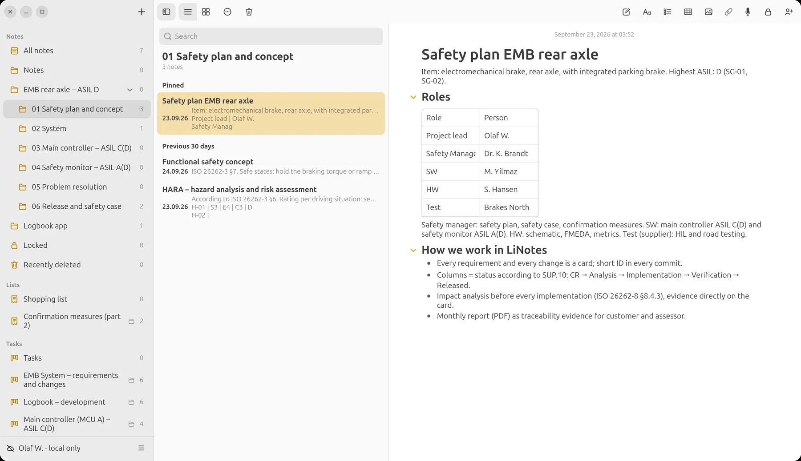
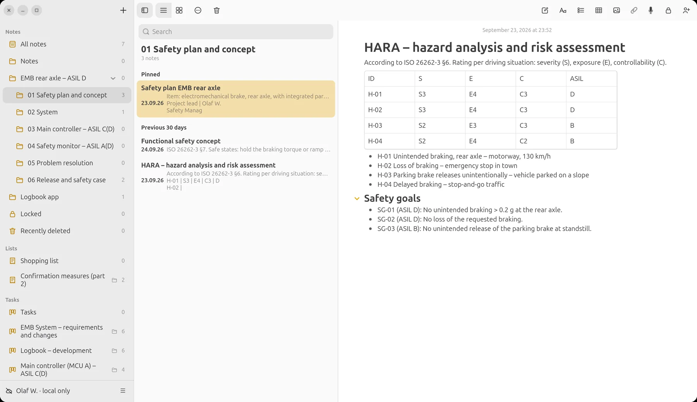
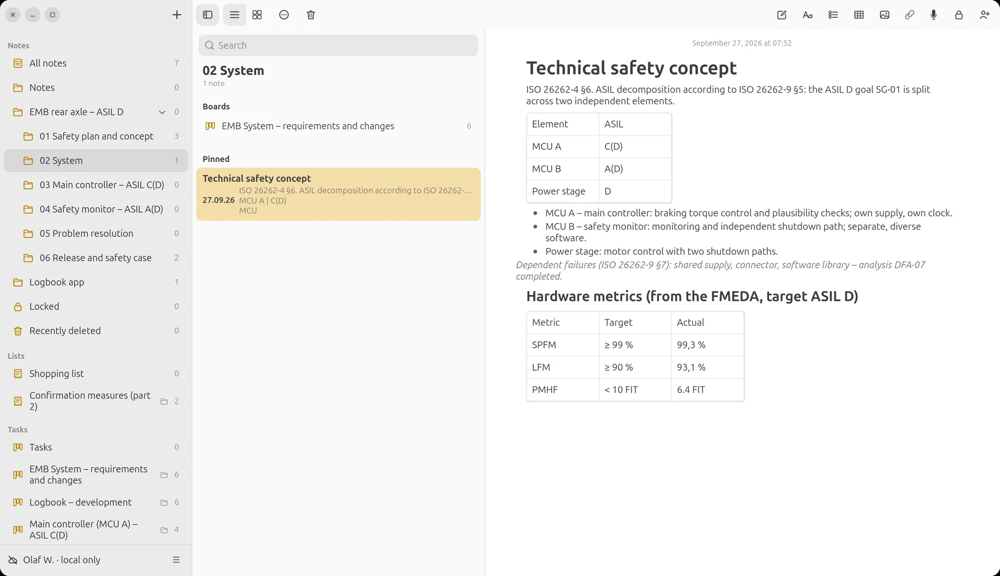
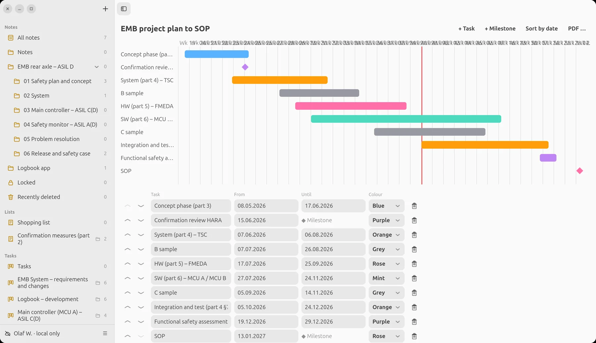
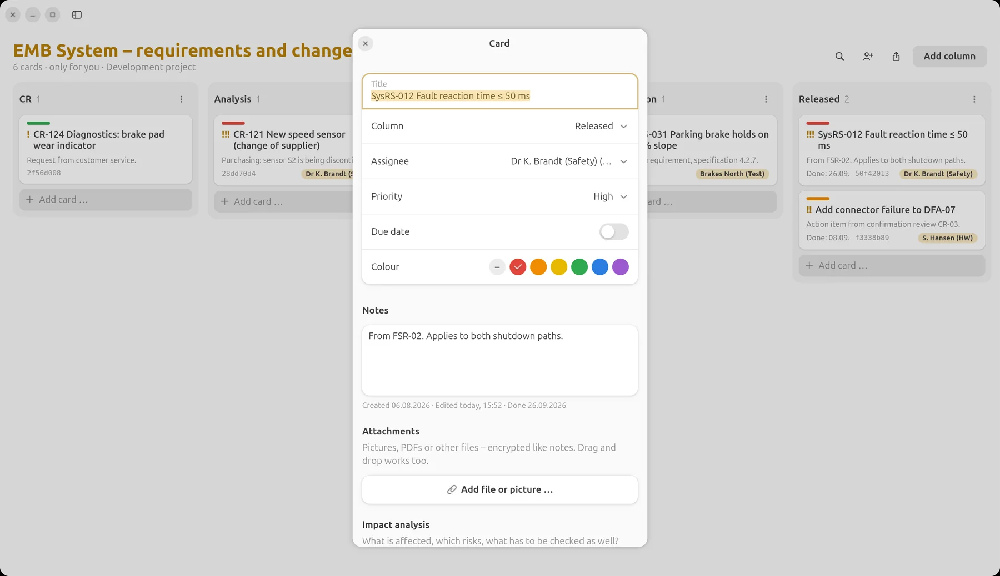
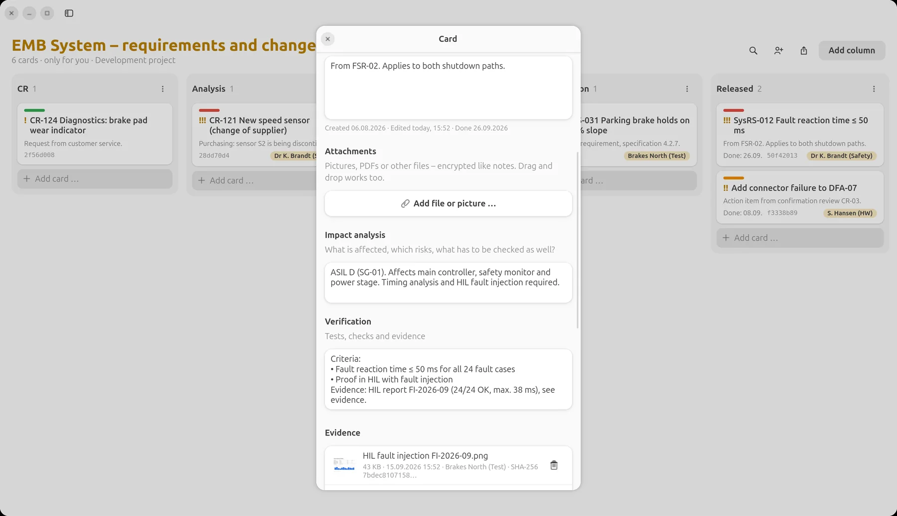
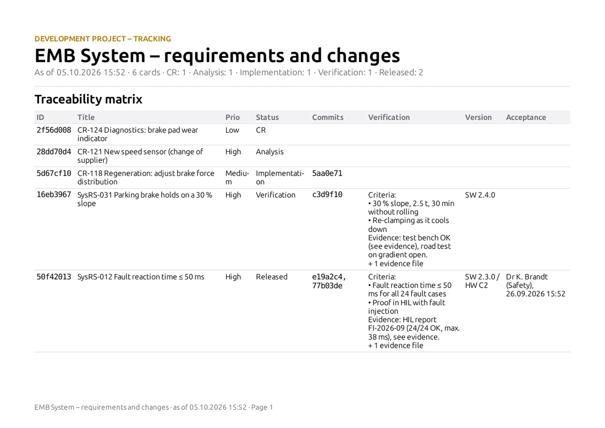
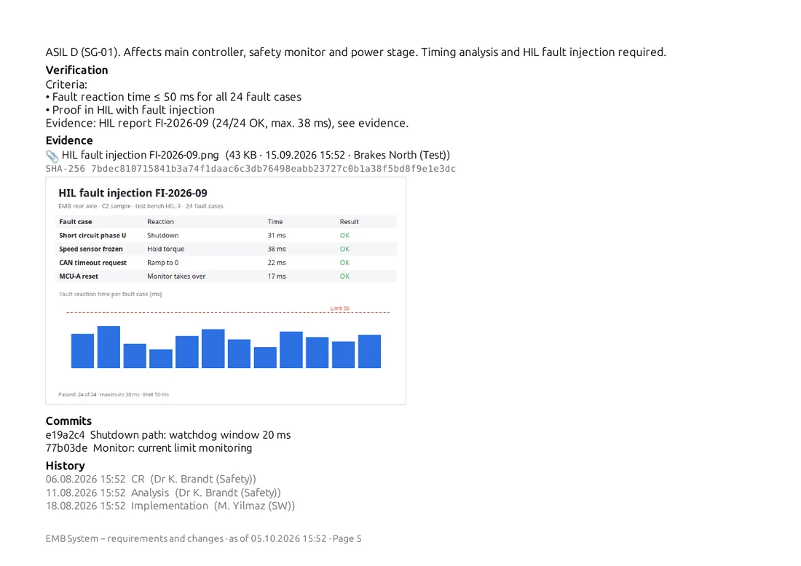
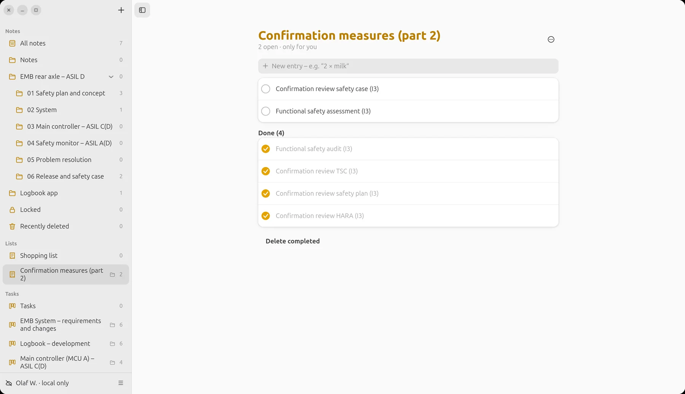

LiNotes
LiNotesAn ASIL D project.
From HARA to release.
An electromechanical brake for the rear axle – ASIL D, split into a main controller ASIL C(D) and a safety monitor ASIL A(D). This is how you set up such a project in LiNotes, steer it with your team and supplier, and bring it to completion with seamless reporting.

All names, requirements, figures and results are made up. The pictures show the real LiNotes app with this sample data.
1 · Set up
The project structure is
the safety lifecycle.
One folder for the item, subfolders for each phase and each element. Inside, notes, boards, plans and checklists sit side by side – like project files, only searchable and end-to-end encrypted.
Folders by phase and element.
- 01 Safety plan and concept – safety plan, item definition, HARA, functional safety concept (ISO 26262-2, -3).
- 02 System – technical safety concept and the system board (ISO 26262-4).
- 03 Main controller – ASIL C(D) and 04 Safety monitor – ASIL A(D) – a board of its own for each decomposed element (ISO 26262-5, -6, -9).
- 05 Problem resolution – bug reports from testing and the field.
- 06 Release and safety case – confirmation measures, minutes, safety case.

HARA and safety goals.
Hazards with severity, exposure and controllability as a table, below them the safety goals SG-01 to SG-03. Every requirement created later names “its” safety goal – so the common thread stays visible.

ASIL decomposition:
D = C(D) + A(D).
The technical safety concept splits SG-01 according to ISO 26262-9 across two independent elements: the main controller (MCU A) with ASIL C(D) and the safety monitor (MCU B) with ASIL A(D). The dependent failure analysis and the hardware metrics from the FMEDA sit right next to it.
- Each element gets a board of its own – with its own team, its own status, its own report.
- Independence is checked as part of every card’s impact analysis.

2 · Steer
Every requirement, every change,
every bug – one card.
One click turns a board into a development project. Cards then carry a short ID, their status history and the fields for impact analysis, verification, version and commits.
System: system requirements (SysRS) and the customer’s change requests (CR). Columns = status according to SUP.10; acceptance into “Released” is done by the safety manager.
Impact analysis first
Before a card goes into implementation: which safety goal, which ASIL, which elements, what regression scope (ISO 26262-8 §8.4.3).
Roles and responsibility
Safety manager, development, hardware, supplier: every card has a person responsible. With @-mentions you bring someone in specifically.
Involving the supplier
Boards can be shared individually with verified people – the supplier’s test bench sees exactly its own cards, end-to-end encrypted (DIA, ISO 26262-8 §5).
Commits automatically
If the card ID is in the commit message, LiNotes links the commit to the card – bidirectional traceability without manual work.
Status history
Who moved the card from “Analysis” to “Implementation”, and when? The history is on every card and in the report.
Version
Every card names the state in which it is implemented (e.g. SW 2.3.0 / HW C2) – for configuration management and release.
The project plan
up to SOP.
Phases according to parts 3 to 6, B and C samples, confirmation reviews and the functional safety assessment as milestones. The red line is today – one look shows where the project stands.

3 · Prove
The evidence is attached
to the requirement.
No reference to a report somewhere on a drive: test reports, measurement curves and screenshots are attached encrypted directly to the card – with time, person and checksum.


SysRS-012 “Fault reaction time ≤ 50 ms”: impact analysis across three elements, criteria and the HIL report with 24 fault cases as evidence.
Reporting
at the push of a button.
Right-click a board → “Export report”. Out comes a PDF with a traceability matrix and a detail page per card – description, impact analysis, verification, evidence with SHA-256 and embedded images, commits, history and acceptance. As CSV for further processing.


On a schedule
Monthly per board to customer and assessor – one PDF per element, with the date in the file name.
Verifiable
The SHA-256 in the report proves which file was attached as evidence – even years later.
Acceptance visible
Who moved a card to “Released”, and when, is shown in the matrix.
4 · Completion
Confirm,
assess, release.
The confirmation measures according to ISO 26262-2 – confirmation reviews, audit, assessment – run as a checklist with the degree of independence. The safety case collects the argument and refers to the boards’ reports.
- Minutes of the reviews as a note, action items as cards on the respective board.
- Release for series production once all cards are released and all confirmation measures are done.
- Final report: the PDF reports of all boards plus the safety case – with checksums of all evidence.

Classification
What LiNotes covers
for ISO 26262.
Honestly put: LiNotes is a tool for organisation, change management, traceability and evidence. It does not do technical analyses such as FMEDA, FTA or timing analysis itself – it documents and links their results.
| Part | Content | Degree | In the example |
|---|---|---|---|
| Part 2 | Management of functional safety | partly | Safety plan and roles as a note, confirmation measures as a checklist, safety case as a note with references to the reports. |
| Part 3 | Concept phase | documented | Item definition, HARA with an S/E/C/ASIL table, safety goals and functional safety concept as notes. |
| Part 4 | Product development at the system level | partly | Technical safety concept, system requirements as cards with verification and HIL evidence; integration and test phases in the project plan. |
| Part 5 | Product development at the hardware level | documented | Hardware metrics (SPFM, LFM, PMHF) from the FMEDA as a result; hardware changes as cards with impact analysis. |
| Part 6 | Product development at the software level | partly | Software requirements per element as cards, MC/DC report as evidence, commits linked. Static analysis and coverage measurement come from your tools. |
| Part 7 | Production, operation, service | not in focus | Possible: field monitoring as a bug report board. |
| Part 8 §5 | Distributed development (DIA) | covered | Share boards specifically with the supplier, responsibilities on every card, end-to-end encrypted. |
| Part 8 §6 | Safety requirements | partly | Unique ID, status, assignment to safety goal and element, traceability to commits and evidence. No formal attributes or baselines as in a requirements tool. |
| Part 8 §7 | Configuration management | partly | Version on every card, linked commits, status history. The baselines and versions themselves live in Git or your CM system. |
| Part 8 §8 | Change management | covered | CR workflow with columns, impact analysis, decision, implementation, verification, acceptance with person and time. |
| Part 8 §9 | Verification | covered | Criteria per card, evidence with SHA-256, report with embedded test reports. |
| Part 8 §10 | Documentation | partly | Notes, reports as PDF, everything encrypted and searchable. Notes have no version history – store released documents additionally as PDF evidence with a checksum. |
| Part 8 §11 | Confidence in the use of software tools | up to the user | LiNotes is not a qualified tool. Tool classification (TI/TD → TCL) and qualification, if needed, are up to you. |
| Part 9 | ASIL-oriented analyses | documented | ASIL decomposition D → C(D) + A(D) and dependent failure analysis in the technical safety concept, one board per element. |
Classification
And for
Automotive SPICE.
Names according to Automotive SPICE 3.1; in version 4.0 the processes are cut similarly. An assessment evaluates the way you work – LiNotes supplies the work products and evidence for it.
| Process | Content | Degree | In the example |
|---|---|---|---|
| SUP.10 | Change management | covered | Change requests as cards, status through columns, impact analysis, decision, tracking through to acceptance, report. |
| SUP.9 | Problem resolution management | covered | “Bug reports” board: report, analysis, correction, verification, closure – with cause and evidence. |
| MAN.3 | Project management | covered | Project plan with phases and milestones, responsibilities, priorities and due dates on cards, progress per column. |
| ACQ.4 | Supplier monitoring | partly | Shared boards with the supplier, test evidence directly from them; contracts and assessments elsewhere. |
| SUP.8 | Configuration management | partly | Versions and commits on the cards; baselines in the version control system. |
| SUP.1 | Quality assurance | partly | Checklists, review minutes, acceptance with person and time; escalation via cards. |
| SUP.4 | Joint reviews | partly | Minutes as a note, action items as cards with responsibility and evidence. |
| SYS.2–SYS.5 | System requirements through to system test | partly | Bidirectional traceability requirement ↔ implementation (commits) ↔ test (evidence) per card; architecture and test specification in your tools. |
| SWE.1–SWE.6 | Software requirements through to software test | partly | As above at element level (MCU A, MCU B), with MC/DC and unit test reports as evidence. |
| SUP.7 | Documentation | partly | Project files in folders, reports as PDF; without a document release workflow. |
This example is guidance, not standards or legal advice. Whether an approach passes an assessment is decided by your process, your evidence and the evaluation by independent assessors.
Try it yourself.
LiNotes is free, open source and runs on your own server – and locally without a server too.